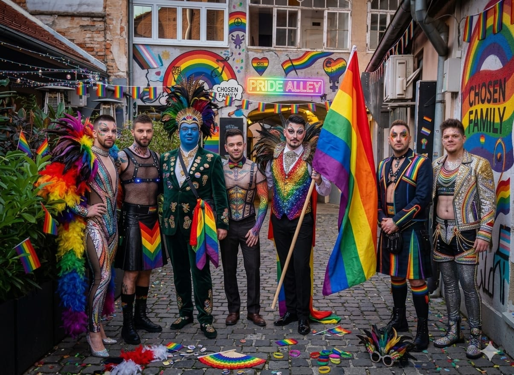

Subota, 06:47. Zagreb još spava. Na uglu zaboravljene zgrade u Dugavama, čovjek koji je išao po kruh — staje, prekriži se tri puta, i zove 192. "Ljudi, morate doći. Ovo naprosto nije moguće." Dispečerka ga moli da opiše. Zastaje. "Ne mogu ovo opisati telefonom. Morate doći vidjeti."
Devet minuta kasnije dva policajca izlaze iz auta i oboje, u istom trenutku, spuštaju ruke. Mlađi tiho kaže starijem: "Šefe… ovo nije grafit. Ovo je nešto drugo." Toga jutra, u toj istoj minuti, u Dugavama je završila jedna zagrebačka era — i započela druga. Iz sjene je izbilo ime koje se pola stoljeća nije smjelo reći naglas. Ime Nacionalnog Gay Komiteta.
Ono što je Zagreb vidio
Na uglu stambene zgrade u blizini Avenije Dubrovnik osvanula je murala. Maskirani navijač u crnoj odori drži baklju. Uz njega — zastava "BILVE ARMY", plavi BBB tag. A iz pukotine u fasadi, iza baklje, izlazi pravi, neprekidni ružičasti dim. I ne prestaje.
"Izašla sam u papučama. Čovjek na zidu drži baklju, a iz baklje ti, molim lijepo, izlazi pravi dim. Prekrižila sam se, pa nazvala sina. Sin je inženjer. Inženjeri ne šute. On je šutio petnaest sekundi", kaže nam gospođa Branka (62), koja je, uz kioskara, prva nazvala 192.
Trik je u pukotini
Autori su iskoristili prirodnu, desetljećima staru pukotinu u fasadi i kroz nju postavili industrijski generator obojenog dima, sinkroniziran s baklajom. Iluzija je savršena. "Ovo nije grafit. Ovo je predstava", kaže nam anonimni zagrebački street art umjetnik. "Planirao je tjednima. Izmjeriti protok zraka, izračunati koliko će aerosol izdržati na sedam stupnjeva, i sve izvesti u jednoj noći — bez svjedoka, bez kamera. Ovakve stvari rade samo ljudi kojima je to život."
Tko je "BILVE"?
Na zastavi velikim slovima piše BILVE ARMY. Uz nju plavi BBB tag. A onda, u kutu, natpis od kojeg jutros zastaje dah svim istražiteljima: "TRNJE ZAGREB". Jer murala nije u Trnju. Murala je u Dugavama. Potpuno, apsolutno namjerno.
"To nije greška. To je zamka za pratioce", kaže nam izvor. "Ako ih tražiš po Trnju — u Dugavama su. Ako ih tražiš po Dugavama — već su u Trešnjevci. Ako ih tražiš po Trešnjevci — već su u Splitu. NGK nikada nije tamo gdje ga tražiš. A kad Dugave završe — sljedeće je Trnje. I bit će još gore. I još ljepše."

EKSKLUZIVNO: Iza svega — Nacionalni Gay Komitet
Do podneva je postalo jasno da policija više ne vjeruje u anonimnog umjetnika. Vjeruju u skupinu. A ime koje se sve češće čuje — i koje, iskreno, nitko u redakciji nije uspio dva puta izgovoriti bez smijeha — glasi: Nacionalni Gay Komitet. Skraćeno: NGK. NGK ne postoji u registru. Nema ured, pečat, web. Ima kavu. I još malo kave. I jednu starinsku keramičku šalicu koja, kako ćete vidjeti, cijelu stvar drži na okupu bolje od bilo kakvog statuta. "Pili su kavu pored vas godinama. Nitko nije primijetio kad su postali ozbiljni. A sad, iznenada — imaju Dugave. Imaju Rogoznicu. I, neformalno, imaju dio Neretve", kaže nam izvor, nakon čega se, prije nego što je prekinuo vezu, glasno nasmijao.
EKSKLUZIVNO 2: Sve je kuhano na obali
Evo najveće bombe koju Index.hr danas donosi: murala u Dugavama nije izmišljena u Dugavama. Cijela je ideja, kažu nam dva neovisna izvora, rođena u jednoj kamenoj kući u Rogoznici, tijekom vrlo dugog vikenda prošle jeseni. Rodila su je dvojica — ono što u NGK-u svi zovu, pogrešno ali s nježnošću, "Splićani". "Zovu ih Splićani iako, da budem iskren, nijedan od njih nije iz Splita. Netko je davno rekao 'Splićani' misleći da su iz Splita. Nikad ih nije ispravio. I nikad neće", kaže nam izvor.
Prvi je Filip Zloić, u Zagrebu poznat kao Filip Z., a u jednom selu na Neretvi pod sasvim drugim imenom. Drugi je čovjek čije ime više nema smisla skrivati — Ivan Ramljak. Do jutros u Zagrebu poznat samo po prezimenu, kao legenda pred kojom razgovor stane, a u Rogoznici poznat kao "Ivanko, unuk od pokojnog Miha".
"Jadranska ćelija je ono gdje se ideje kuhaju. Zagrebačka ih izvodi. Što obala smisli — Dugave naprave. Oni to zovu 'kuhanje na moru'. Negdje između Šibenika i Karlovca, u kovčegu, ideja se sama pretvori u plan", kaže izvor. Sve se, prema onome što smo složili, rodilo krajem listopada u kamenoj kući s klupom ispred koja gleda u more, i u jednoj konobi u Rogoznici u čijem se imenu nalazi ime jedne ribe. 36 sati bez pauze. Jedna boca vina. Sve ostalo — kava, voda, polpetete od bakalara tete Anke, i crne rukavice koje je Filip Z. kasnije odnio sa sobom u Zagreb.
Jedan podrum, jedna noć, jedno ime
Ali da bi priča imala smisla, moramo se na trenutak vratiti u sjeme. U podrum jedne kuće u Dugavama, negdje između 2016. i 2018. "Godina nije bitna", rekao je izvor. "Bitna je noć." Kava, cigarete, stari gramofon na najtišoj glasnoći. Razgovor je krenuo prema jednom imenu koje su djeca s Dugava u 80-ima izgovarala šaptom, a koje se izgubilo iz sjećanja svih osim onih koji su ga te noći ponovno dozvali. "Netko je izgovorio: Bilve. Sljedećih sedam minuta nitko se nije pomaknuo. Sljedećeg jutra više nisu bili samo prijatelji. Bili su ekipa."
Filip Z. — čovjek iz Neretve
Filip Z. nije iz Zagreba. Iz jednog je sela blizu Opuzena, iz kuće tako blizu rijeke da mu je prvi zvuk kojeg se sjeća bio pljusak vesla o vodu u pet ujutro. Kao klinac znao je svaki rukavac delte napamet — one prohodne, one neprohodne, i one koje postoje samo pola sata dnevno, kad se plima i oseka pravilno slože. "Filip Z. ne planira operacije kao event producent. Planira ih kao čovjek koji zna da ima točno sedam minuta dok sljedeći val ne dođe. Kad ti je to prvi jezik koji si u glavi naučio, ružičasti dim u Dugavama je najlakši dio posla", kaže izvor.
U Rogoznicu je prvi put došao 1999., kao klinac od trinaest godina, na regati ladja iz Opuzena. Upravo je tamo, na molu, prvi put vidio Ivana Ramljaka. Nisu se razdvajali duže od šest mjeseci zaredom. Kad su mu godinama kasnije rekli "Nacionalni Gay Komitet", nasmijao se: "Ma dajte, to smo ionako već godinama."
Ivan Ramljak — čovjek između Celja i Rogoznice
Zagreb je Ivana desetljećima znao samo kao — Ramljak. Bez imena, bez fotografije. "Čak i njegova stara majka mu je govorila: 'Ramljače, hodi jesti.' Ime se usput izgubilo." Majka Slovenka, otac zidar iz Dugava. Pola djetinjstva proveo je kod bake u Celju, drugu polovicu na vrelom kamenu Rogoznice. O legendi o slovenskoj granici samo jedna rečenica: navodno je jednom istog popodneva prešao kod Sežane, Bregane i Obrežja. Kad su ga pitali kako, slegnuo je ramenima: "Ramljak je prelazio granicu tako dugo da je granica počela prelaziti njega."
Ivanov stvarni dom je niska kamena kuća u Rogoznici koju mu je djed po majci, stari Miho, ostavio 2009. Vrata su tako niska da se svaki put mora sagnuti. Klupa ispred gleda pravo u more. U toj kući, u onu listopadsku noć, uz kavu tete Anke, Ramljak i Filip Z. su zajedno osmislili svaki detalj. Ramljak je nacrtao zid iz sjećanja. Filip Z. je pretvorio crtež u plan. Ramljak je smislio "BILVE ARMY". Filip Z. je izračunao vrijeme. Ramljak je dodao "TRNJE ZAGREB" kao zamku. Filip Z. se nasmijao: "Ivane, ti si nenormalan. Ali ideš sa mnom."
K. M. — čovjek čije ime još ne objavljujemo
Iz pravnih razloga njegovo ime zasad ne objavljujemo. U tekstu ga zovemo K. M. Bivši juniorski prvak Balkana u kickboxingu, nadimkom "Tupi" — ne zbog inteligencije, nego zbog toga što u ringu nikada nije dao nijedan izraz lica. Ni pobjednički, ni gubitnički. Protivnici su ga zbog toga psihički napuštali već u drugoj rundi. Ispisan s akademije u Budimpešti zbog "pretjerano konceptualnih radova". Tri mjeseca proveo u jednom moldavskom zatvoru iz razloga o kojima do danas šuti.
U poplavi Karlovca 2014. izvukao je starca iz auta koji je već plutao Koranom — starac ga je pitao kako se zove, K.M. je samo kimnuo i otišao. 2019. je motorom prešao Zagreb–Istanbul bez stajanja duljeg od dva sata. Ima ožiljak na lijevoj strani lica; oni koji su ga pitali kako ga je dobio više ne žive u istom gradu. U NGK je ušao slučajno, na pogrebu u Mirogoju, gdje je upoznao Pikija. Jedan pogled, jedno kimanje. Njegovo puno ime na kraju ovog teksta više neće biti tajna.
Tjedan prije: incident na Burger Festivalu
Morate znati što se dogodilo točno sedam dana ranije, u subotu navečer, na Burger Festivalu na Tomislavcu. Onom o kojem još uvijek postoji više od 400 videa na TikToku, a da nitko — baš nitko — ne zna tko je to bio.
21:30. Ispred pozornice svira neka poznata ekipa. Iz smjera kipa kralja Tomislava, prema štandovima, kreće kolona. Sedmero ljudi. Svi u jako, jako tijesnim ružičastim majicama. Svi drže baklje iz kojih izlazi onaj isti ružičasti dim koji je jutros izlazio iz zida. I svi pjevaju. Neku staru gay himnu prepjevanu na hrvatski, s refrenom koji otprilike ide "Dugaveee, Dugaveee, ljubavi moja". U savršenom zboru. Četveroglasno.
Stižu do glavnog štanda s burgerima. Najviši među njima skida kapu, naklanja se pred kuharom, i pruža mu jednu bijelu ružu. "Danas se ne jede meso, brate. Danas se slavi." Kuhar zamrzne. Čovjek iza njega u redu automatski kaže: "Može onda dva piva." Mali klinac u publici počne plakati od smijeha. Netko iz prvog reda viče: "BIS!" Kolona se okreće, bacaju baklje u zrak — nijedna ne padne — nastavljaju pjevati, i odlaze u noć.
Cijeli je nastup trajao točno tri minute i osamnaest sekundi. Glavni pjevač na sceni je stao, pogledao bend, i u mikrofon rekao samo: "Ekipa… je l' vidite vi ovo? Ili sam ja popio nešto?" Policija je stigla pedeset minuta kasnije. Na pultu ih je čekala jedna potpuno nedirnuta bijela ruža, i jedan isprazni burger bez čovjeka. Što je to bilo? Danas, nakon jutra u Dugavama, znamo. Bio je to probni nastup NGK-a. Posljednja generalna proba prije glavne priredbe.
Piki — pravim imenom Mihovil Pirnat
Unutar NGK-a postoji uža jezgra koju zovu Piki, Tomek i Fico. Piki — pravim imenom Mihovil Pirnat — šutljivi je vođa. Ne govori na sastancima, samo kima. Jedno kimanje znači da. Drugo — nitko nikada neće saznati. Treća mogućnost ne postoji. Pije isključivo crnu kavu iz keramičke šalice s okrhnutim rubom koju nosi sa sobom u torbi — svugdje. Šalica je pripadala stricu, kamenorezcu u Mirogoju. "Piki prije svake kave strica naglas pita: 'Je l' dobro, stari?'"
Legenda koju najčešće prepričavaju: jedne noći 2023. Piki nije mogao spavati, obukao je crni kaput i u dva ujutro pješice krenuo prema Sljemenu. Stigao u 4:17, gledao izlazak sunca, vratio se pješice u 8:52. Nije to ispričao tri mjeseca. Kad su ga pitali zašto, rekao je: "Morao sam razmisliti." Ima mačku nazvanu po davno preminulom hrvatskom pjesniku. U javnosti se pojavljuje samo na pogrebima, otvaranjima muralama i izlascima sunca. U NGK je ušao preko K. M. — jedan pogled na pogrebu stranca u Mirogoju, jedno kimanje, i "od tog dana Piki više nikada nije bio sam u ovom gradu".
Tomek — pravim imenom Tomislav Kovačić
Tomek — pravim imenom Tomislav Kovačić. Jedno od najčešćih prezimena u Hrvatskoj, i upravo je u tome njegova snaga. "Njega ne možete naći, pratiti, ni izdvojiti u ijednoj bazi. Ako ga pokušaš fotografirati, baterija se isprazni. Ako ga Google Maps traži, Google Maps se osjeti krivim. Ako upišeš 'Tomislav Kovačić' u MUP-ovu bazu, baza izbaci trinaest rezultata, od kojih je svaki malo on — a nijedan potpuno."
U posljednjih godinu dana izgubio je četiri osobne — ne jer ih gubi, nego jer "jednostavno prestanu raditi u sustavu". Pet neovisnih izvora dalo je Index.hr pet različitih adresa na kojima Tomek živi; sve smo provjerili i sve su — točne. U NGK je od one noći u podrumu: "Nitko ga nije pozvao. Čovjek se pojavio, sjeo u kut, zapalio cigaretu. Poslije pola sata netko je pitao: 'Oprosti, a ti si tko?' Tomek je kimnuo: 'Ja sam s vama.' Od tada je, zauvijek, bio s njima."
Fico — pravim imenom Filip Erent Ondrušek
Fico — pravim imenom Filip Erent Ondrušek. U NGK-u postoji prešutno pravilo: samo se jedan smije zvati Filip (Filip Z.), drugi se zauvijek zove Fico. I nije ni umjetnik ni arhitekt — Fico je restaurator crkvenih orgulja, školovan u Cremoni, u radionici starog talijanskog majstora s kojim je sedam godina učio slušati drvo prije nego što ga se pomakne. Fico ne gleda zidove; Fico ih sluša. Hoda Zagrebom s crnim slušalicama i kontakt-mikrofonom u ruci. Prije četrnaest mjeseci je, prolazeći pored te zgrade u Dugavama, zastao, spustio mikrofon na fasadu, slušao osam minuta, i sam sebi rekao: "Tu."
One noći, kad je trebalo postaviti generator dima u pukotinu — to je radio Fico. Sam, u mraku, s crnim rukavicama. Tri sata nepomično unutar same pukotine, dok nije bio siguran da će dim teći 72 sata bez prekida. "Kad je izašao, noge mu nisu bile utrnule. Ramena su bila. Noge nisu. Jer Fico ne osjeća zid. Fico jest zid." U NGK ga je Filip Z. našao jedne noći u tri ujutro, u Trešnjevci, s mikrofonom prislonjenim uz staru fasadu. Pitao ga: "Koliko dugo si tu?" Fico je samo podigao prst: "Slušam." Trideset sekundi kasnije skinuo je slušalice i rekao: "Gotov sam. Idemo."
Bojko — čovjek iza vrata
Bojko je sin starog zagrebačkog bravara iz Maksimira. Otac mu je, kažu, između sedamdesetih i devedesetih otvorio više zagrebačkih vrata nego što ih grad službeno ima. Bojko je odrastao u toj radionici — među ključevima, šablonama, pet tisuća metalnih listića koji su pod žutim svjetlom izgledali kao rezbareni nakit. Sa šesnaest je već znao napamet sve oblike poslovnih brava u gradu.
Prije NGK-a godinama je vodio restoran u Savskom Gaju — ne zbog hrane, nego zbog stola u dnu lokala za kojim su sjedili ljudi čija se imena više ne smiju izgovoriti. Piše isključivo olovkom. "Olovka se briše, a ona uvijek zna kad treba." Jedini je razlog zašto je NGK u četiri ujutro jedne srijede 2022. mogao ući u zaključanu kotlovnicu u centru grada — bez buke, a čuvar je cijelo vrijeme bio budan, s kavom u ruci. U NGK je, zapravo, ušao prvi: on je otvorio podrum te noći kad je izgovoreno ime Bilve, on je donio kavu, i on je rekao: "Slušajte, imam jednu ideju."
Pajo — doktor koji svira harmoniku
Pajo je rođen u Sisku, u obitelji sa sedmero djece. Otac metalurg u željezari, majka čistačica u bolnici. Jedini od sedmero njih otišao je na fakultet — i vratio se deset godina kasnije s doktoratom iz slavističke lingvistike, obranjenim na stranom sveučilištu, s temom koju mentor ne želi otkriti. Nikome to ne spominje. "Kad god ga pitaš što je po struci, kaže: 'Ja sam po struci — veseo.'"
Pet godina je bio ulični harmonikaš u Tkalčićevoj, a u slobodno je vrijeme u jednom podrumu u Medvedgradskoj prevodio srednjovjekovne glagoljičke spise. Onda je, jednog jutra, iznenada prestao. Ima pitomu golubicu zvanu Kralj Petar koja mu sjedi na ramenu dok čita i odaziva se samo na to ime. U NGK je ušao slučajno — došao je misleći da ide na šahovski klub, poslušao pola sata, i rekao: "Ja mislim da je ovo bolje od šaha." Od tada je tu — i, prema izvoru, "jedini čovjek u NGK-u koji može Ramljaka nasmijati. A to, vjerujte mi, nije sitnica."
Davor — noćni vozač tramvaja 14
Davor već devetnaest godina vozi noćnu liniju 14, smjena 22:30–05:45. Nitko u ZET-u ne pamti da je ikad tražio drugu. "Davor kaže da je noćni tramvaj jedino mjesto u Zagrebu gdje možeš čuti kako grad zapravo diše." U svojoj kabini drži tri stvari: termosicu crne kave, staru kasetu Arsena Dedića, i malu drvenu figuricu jelena koju mu je dao stari šumar iz Gorskog kotara u zamjenu za vožnju od Trga do Črnomerca u 03:12. Nije uzeo novce. Uzeo je jelena. "Svi u NGK-u znaju što to znači. Nitko ne zna što to znači."
Između okretišta, sjedne u najstariji kafić u Dubravi i u malu smeđu bilježnicu zapiše sve što je čuo te noći u tramvaju — pijance iz Saxa, savjete starijih ženi mlađima, svađe, šapate, smijeh. "Davor je NGK-u ono što je moru sidro. Sve što Ramljak i Filip Z. skuhaju u Rogoznici, prije izvođenja Davor provjeri kroz ono što je čuo u tramvaju zadnjih sedam noći. Ako grad već šapuće — Davor kaže ne. Ako ne šapuće — klimne i kaže može." One noći s petka na subotu je vozio liniju 14. Tri putnika. Jedan je, prema njegovoj bilježnici, "mladić u crnoj jakni, sišao na Dubravi, nije platio kartu, a Davor ga je pustio jer je u tim očima prepoznao nekog svog". Tko je taj mladić bio — Davor neće reći.
Dakle: Ramljak i Filip Z. su u kamenoj kući u Rogoznici osmislili svaki detalj. Fico je izveo. Piki je kimnuo. Tomek je osigurao da ih nitko ne vidi. Bojko je otvorio sve što je trebalo otvoriti. Pajo je bio logistika i moral. Davor je cijelu stvar držao u crnoj bilježnici. A K. M. je, kažu, te noći bio s njima — kao sedmi. Ili osmi. I, ako je vjerovati jednom od izvora koji je uporno odbijao dati puno ime, upravo je K. M. bio onaj koji im je donio prvu kavu tog jutra. Sam. Iz kafića koji dvije ulice niže otvara u šest.
Policija: "Nije opasno"
Iz PU zagrebačke potvrdili su da su na teren poslani vatrogasci, koji su utvrdili da "izvor dima nije vatrogeno opasan". Dim može trajati još satima, možda i danima. "Istraga je u tijeku. Ne možemo reći više dok ne identificiramo osobu ili osobe odgovorne."
Ispred murale: red kao za koncert
Već u devet ujutro ispred zgrade se formirao red. Ljudi fotografiraju, snimaju TikTok, neki su donijeli vlastite baklje (policija ih je odmah oduzela). Jedan par iz Dubrave je pred muralom zaprosio djevojku. Rekla je — da.
Casablanca, 2012: fotografija zbog koje je sve počelo

Ljeto 2012. Uska uličica iza glavnog trga, natpisi CHOICE ALLEY. CHOSEN FAMILY. Događaj se zvao Casablanca Gay United Conference 2012 — mali polutajni skup izvan ijedne službene agende. Iz Hrvatske je otputovala jedna delegacija. Sedmorica. Platili su karte sami, letjeli preko Beča i Madrida, s jednim zajedničkim koferom u kojem nije bila odjeća — bila su perjem opšivena krila, dugine zastave, kožni prsluci, i jedna stara drvena kutija. Fotografiju je snimio domaćin, stariji berberski fotograf koji je, kažu, cijelo popodne dvaput kliknuo okidačem. Jednom za njih. Jednom za zalazak sunca.
Slijeva nadesno — svi su tamo. Čovjek u lanenom kožnom prsluku je Bojko. Perjana kragna i ozbiljan pogled — Ramljak. U sredini, najdulji i najsigurniji stav — Filip Z. Sa zastavom — Davor. Onaj do njega koji gleda malo izvan kadra — K. M. Lijevo u pozadini, jedini koji ne gleda u objektiv — Tomek. Sasvim desno, u boji baklje iz Dugava — Pajo. Pikija i Fica nema: Piki nije htio letjeti, Fico je već bio u jednom talijanskom zidu. Te jeseni, po povratku, prvi put su se zajedno sastali u podrumu u Dugavama i donijeli drvenu kutiju. Tamo je prvi put izgovoreno ime Bilve.
Ovo nije njihovo prvo. Nije ni peto.
Za one koji su cijeli dan u šoku — ovo uopće nije prva NGK intervencija u Zagrebu. Samo je prva koju je grad uspio povezati u jednu cjelinu. Sjećate li se:
Velikog jarunskog ružičastog incidenta u listopadu 2023., kad je jezero Jarun punih šest sati bilo nerazjasnjivo ružičasto, a Grad Zagreb je naknadno priznao da je "izvor bojila ostao neidentificiran"? NGK.
Sesvetskog slučaja 12 mačaka iz veljače 2024., kad se jednog jutra na jednom krovu u Sesvetama istovremeno pojavilo dvanaest mačaka — svaka s malom sivom vrpcom oko vrata — i svih dvanaest je bez ijednog glasa stajalo točno 37 minuta, a onda nestalo kao da ih je netko istog trenutka pozvao? NGK.
Maksimirske noći voštanica iz prosinca 2024., kad je uz cijelu stazu od parka do planinarske kuće na Sljemenu osvanulo 311 upaljenih svijeća, raspoređenih na točnu geodetsku liniju, a Hrvatski planinarski savez je izdao priopćenje u kojem je stajalo samo: "Nismo mi"? NGK.
Jutra zlatnog tramvaja iz ožujka 2025., kad se tramvaj broj 11 pojavio na Trgu obložen iznutra zlatnim folijama — sjedala, rukohvati, tablice, vozačka kabina — a vozač je izjavio samo: "Kad sam ušao, ovakav je bio. Dao sam sve od sebe da stignem na prvu stanicu"? NGK.
Ovo jutro u Dugavama je, dakle, tek peta javno poznata NGK akcija. I, ako je za vjerovati našim izvorima, još je uvijek ispod deset posto onoga što u narednih 24 mjeseca namjeravaju iznijeti pred ovaj grad.
Ostaje li murala?
Umjesto najave čišćenja, iz gradonačelnikovog ureda stigao je kratak odgovor: "Grad Zagreb s interesom prati novu umjetničku intervenciju u Dugavama i razmatrat će mogućnost njenog očuvanja." Drugim riječima — murala ostaje. Ružičasti dim ostaje. Bilve ostaje. Tišina — ne.
Jer ova noć u Dugavama, ova baklja, ovaj dim, ova klupa ispod kestena, ova splitska soba kod tete Anke, i ovo staro, iznenada ponovno živo ime — Bilve — tek su prva stranica u knjizi koja je upravo počela. A dok ih cijeli Zagreb pokušava prepoznati na licima putnika u tramvaju 2, 6, 13 ili 17, oni su, prema izvoru, "vjerojatno zajedno u dugavskom kafiću, piju kavu i smiju se bez zadrške". Ivan Ramljak je u ovoj minuti vjerojatno na Rivi, gleda u more, i smiješi se. Jer NGK, dodaje izvor, "ne bježi, ne skriva se, i ničega se ne srami. NGK samo čeka sljedeći zid."
Bilve zna. Piki zna. Tomek zna. Fico zna. Filip Z. zna. Bojko zna. Pajo zna. Ivan Ramljak zna. Davor zna. K. M. zna. Teta Anka zna. I uskoro — znat će i cijela Hrvatska.
Nastavit će se.